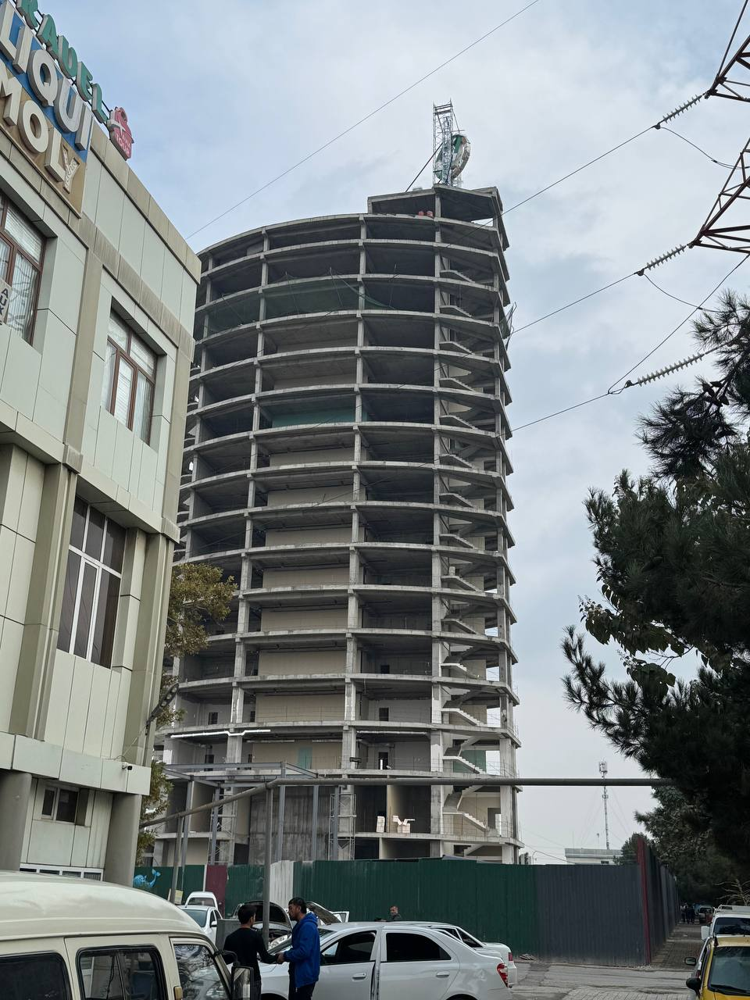
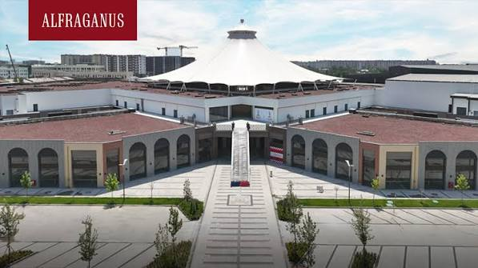
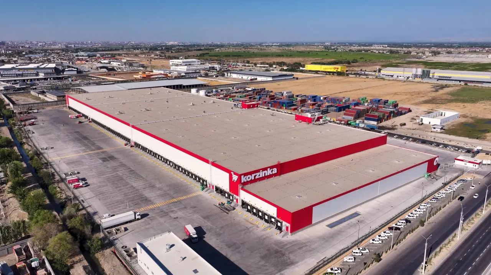
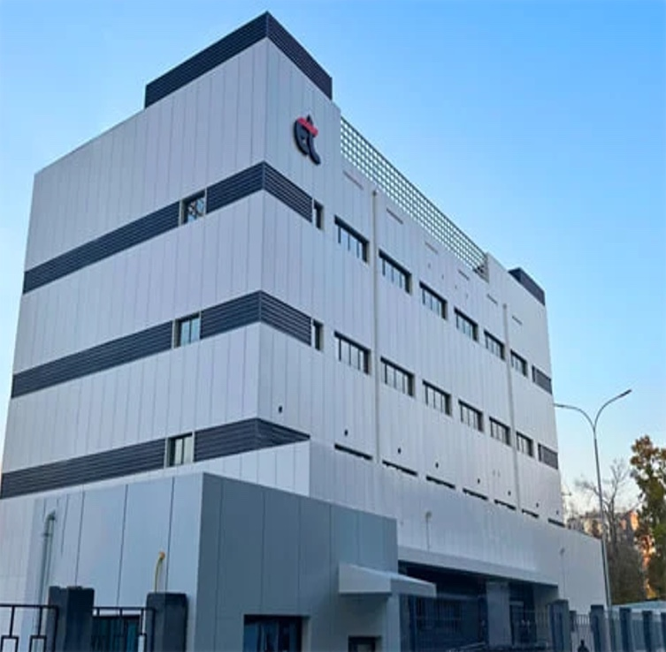
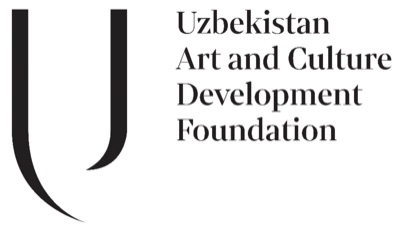
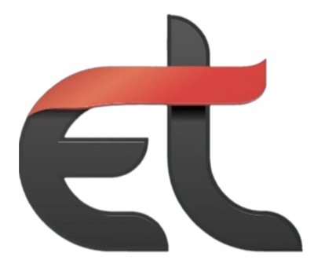
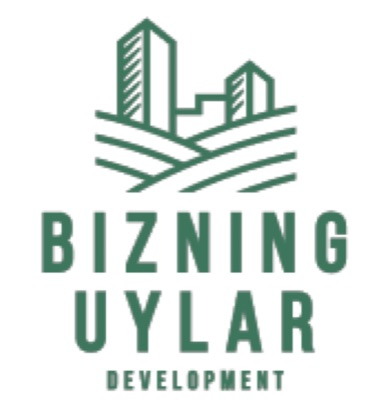
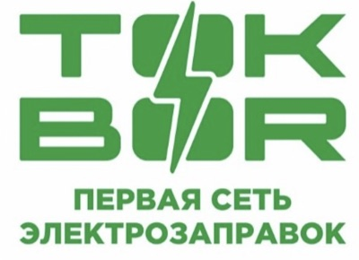
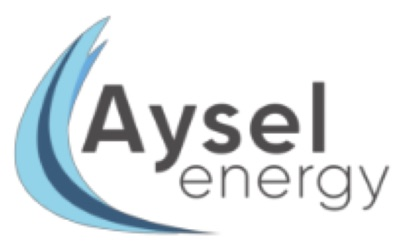
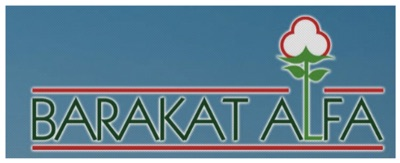

Hamkorbank markaziy binosi
Ko'p qavatli ma'muriy binoning energetika tizimi — loyihalash va qurish ishlari korxonamiz tomonidan olib borilmoqda.
Loyiha
- Buyurtmachi
- Hamkorbank
- Shahar
- Andijon




MUHANDIS HIZMATI — 5 yildan beri elektr ta'minoti tizimlarini loyihalash va qurish bilan shug'ullanuvchi korxona.
MUHANDIS HIZMATI — 5 yildan beri elektr ta'minoti tizimlarini loyihalash va qurish bilan shug'ullanuvchi korxona.
Ikki yo'nalishda ishlaymiz: elektr montaj va ishga tushirish-sozlash ishlari hamda elektr qurilmalariga texnik xizmat ko'rsatish.
Ishimiz asosida aniq muhandislik hisobi, tartibli jarayon va mijoz bilan ochiq muloqot turadi.
Xizmatlar
Obyektning elektr ta'minoti — loyihadan ishga tushirishgacha bitta jamoa qo'lida. Loyiha, montaj va topshirish uchun bitta mas'ul.
Elektr ta'minoti va muhandislik tizimlari bo'yicha amaliy o'quv mashg'ulotlari. Nazariya emas — real obyekt va real hujjatlar asosida.
Qurilish loyihalarida muhandislik tizimlari uchun aniq smeta va byudjet hisobi. Qurilish boshlanishidan oldin raqam aniq bo'ladi.
Obyektlardagi jarayonni raqamli nazorat va hisobot tizimiga o'tkazish. Har bir bosqich ko'rinadigan, o'lchanadigan va hujjatlashtirilgan bo'ladi.
Loyihalar
Ko'p qavatli ma'muriy binoning energetika tizimi — loyihalash va qurish ishlari korxonamiz tomonidan olib borilmoqda.
Loyiha
Savdo va turar-joy majmuasi ta'minoti uchun 35/10 kV kuchlanishli, 10 000 kVA (10 MVA) quvvatli podstansiya qurildi. Alfraganus — Markaziy Osiyodagi eng yirik ochiq osmon ostidagi riteyl-park.
Bajarilgan ish
Obyektning ichki elektr ta'minoti tizimlari korxonamiz tomonidan qurildi. Majmua 10 gektar hududda joylashgan, 4 ta logistika blokidan iborat; ombor maydoni 49 000 m², bino o'lchami 372 × 121 m.
Bajarilgan ish
Binoning elektr ta'minoti tizimlari va podstansiya korxonamiz tomonidan qurib topshirildi. Obyekt 2024-yilda foydalanishga topshirilgan.
Bajarilgan ish
Tarixiy bino rekonstruksiyadan so'ng Markaziy Osiyodagi birinchi zamonaviy san'at markaziga aylanadi. Majmuaning elektr ta'minoti korxonamiz tomonidan qurilmoqda.
Bajarilgan ish
O'zbekistondagi eng yirik fastfud tarmog'ining sovutish ombori uchun elektr ta'minoti liniyasi montaj qilindi; liniya va ombor uskunalari sinovdan o'tkazilib, ishga tushirildi.
Bajarilgan ish
Mijozlar va hamkorlar

Uzbekistan Art and Culture Development Foundation
Development and Marketing Group
Bizning Uylar Development
TOKBOR
Aysel Energy
Barakat AlfaMijozlar fikri
[Mijoz sharhi shu yerga yoziladi — ikki-uch jumla: qanday ish bajarildi va natija qanday bo‘ldi.]
[Ikkinchi sharh matni. Aniq narsani aytgan sharh yaxshi ishlaydi: muddat, tartib, hujjatlar sifati.]
[Uchinchi sharh matni. Qisqa bo‘lgani ma’qul — uch-to‘rt qatordan oshmasin.]
Savol-javob
Yo‘q. Ish to‘liq sikl bo‘yicha olib boriladi: loyihalash, qurish va ishga tushirish. Bajarilgan ishlarimiz orasida 35/0,4 kV podstansiya va data-markaz elektr ta’minoti bor.
Asosan Toshkent shahri va Toshkent viloyatida. Andijondagi ob’ekt kabi boshqa viloyatlardagi ishlar ham kelishuv asosida qabul qilinadi.
Narx ob’ekt hajmi, quvvati va ish turiga qarab belgilanadi. Aniq raqam texnik topshiriq aniqlangandan keyin, smeta bilan birga beriladi — qurilish boshlanishidan oldin.
Ish tartibi
Qo'ng'iroq qilasiz yoki Telegram orqali yozasiz.
Obyekt, quvvat talabi va muddatni birga aniqlaymiz.
Hisob-kitob va smeta tayyorlanadi. Narx qurilishdan oldin aniq bo'ladi.
Shartnoma imzolanadi va ish boshlanadi.
Loyihangiz bo'yicha savol bo'lsa — qo'ng'iroq qiling yoki Telegram orqali yozing.